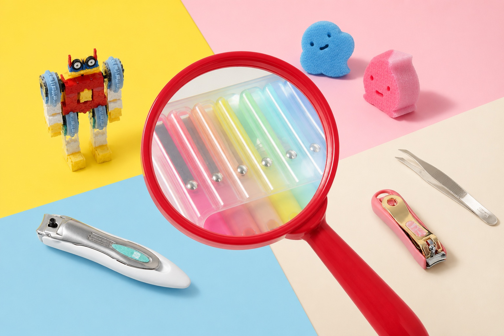

JAPONIŠKI ATRADIMAI UŽSUKITE KAI NORĖSITE | ||||||
 | ||||||
Sveiki, [[contact.first_name | default:"JAPOKO bičiuli"]], Jei tiesiog dairėtės — viskas gerai. O jeigu norėsite pratęsti pažintį su JAPOKO, paliekame kelias kryptis, nuo kurių patogu pradėti. | ||||||
BE SKUBĖJIMO KUR NORĖTUMĖTE UŽSUKTI? | ||||||
| ||||||
Jokių įsipareigojimų — tik japoniški atradimai. | ||||||
| MB „Creator Japonicus“ · Bajorų g. 9, Migūnai, Vilniaus raj., LT-13243, Lietuva japoko.com · info@japoko.com Šį laišką gavote po apsilankymo JAPOKO parduotuvėje. Atsisakyti naujienlaiškio |